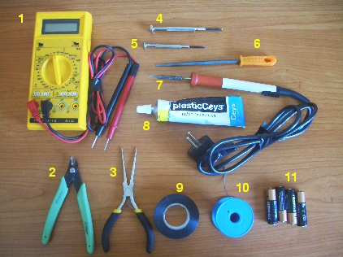

|
Taller de Robótica Básico - Skybot v1.4. - SESION 1 |
|
|
Preparar la estructura del robot. Trucar los servos y entender su funcionamiento como motores de corriente continua.
Material adicional (no incluido en el kit del robot) que se va a necesitar para esta sesión:
|
 |
1) Polímetro (opcional) 2) Alicantes para cortar 3) Alicates de cabeza plana 4) Destornillador pequeño de estrella 5) Destornillador pequeño de cabeza plana 6) Lima 7) Soldador de punta fina 8) Pegamento para plásticos rígidos 9) Rollo de cinta aislante 10) Rollo de estaño 11) cuatro pilas tamaño AA |
Primero montaremos el chásis del robot. Está constituido por piezas de plástico que se pegan. Seguir los pasos descritos aquí. Según el pegamento empleado, las piezas tardarán más o menos en pegarse. Una vez construido el chásis, lo dejaremos en un sitio apartado secándose y no lo utilizaremos hasta la sesión II, el día siguiente.
Para el robot utilizaremos motores de corriente contínua (cc). Estos motores son muy baratos, sin embargo tienen el inconveniente de que giran muy deprisa pero tienen muy poca fuerza (es como intentar arrancar un coche en cuarta). Es necesario utilizar una serie de engranajes para conseguir mayor fuerza a costa de perder velocidad. Una solución muy empleada es utilizar servomecanismos, como por ejemplo los Futaba 3003 o compatibles, que se pueden conseguir en cualquier tienda de aeromodelismo. Tienen una fuerza y velocidad muy adecuados para hacer pequeños robots móviles de aprendizaje que se puedan desplazar por pequeñas superdicies, como la de una mesa. Para convertirlos en motores de corriente contínua normales es preciso “trucarlos”. Para ello hay que abrirlos, eliminar la electrónica interna y los topes mecánicos y soldar un par de cables. Todo el proceso está descrito aquí
El robot será autónomo y se alimentará con 4 pilas AA (6v). Durante el taller, si no se quieren gastar pilas, se puede utilizar un alimentador que voltaje de salida comprendido entre 4.5 y 6v. Las pilas se colocan en el portapilas y para conectarlo a la electrónica hay que soldar un conector de tipo jack. Aproecharemos para utilizar el polímetro para comprobar que hemos soldado bien los cables y que no hay ningún cortocircuito. También mediremos la tensión de salida, para asegurarnos que es la correcta. Seguir los pasos descritos aquí.
Por último comprobaremos que los servos funcionan correctamente y aprovecharemos para ver cómo funciona un motor de corriente continua. Hacer las pruebas descritas aquí.
Al terminar la sesión 1 deberemos tener estos elementos:
|
|
1) Chásis del robot 2) Ruedas 3) Tornillos del eje de los servos 4) Cables para los sensores 5) Servos trucados y probados 6) Portapilas con sus pilas y comprobada su tensión de salida. |
Cuaderno técnico II: trucaje de los servos Futaba 3003. Más información sobre los servos y cómo trucarlos.
Microbot Tritt, un robot abierto y sencillo para iniciarse en la robótica. Hecho con piezas de Lego (Iearobotics, Microbótica).
Microbot Siko, robot-oruga de muy bajo coste para iniciarse en la robótica(Jose Pichardo)
Rastreador Slayer, con tracción delantera y cabeza giratoria. (Daniel Alvarez y Alberto Calvo)
Queen-Mary, otro rastreador que usa Cds como ruedas (Daniel Álvarez y Alberto Calvo)
Robot PI, comercializado por RBZ. Plataforma muy buena para iniciarse y profundizar en los algoritmos de navegación y cooperación.

{kind=link}
{kind=link}